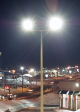
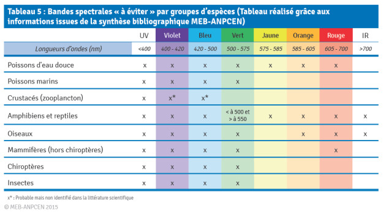
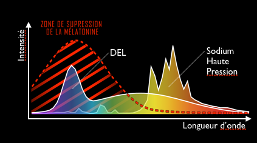
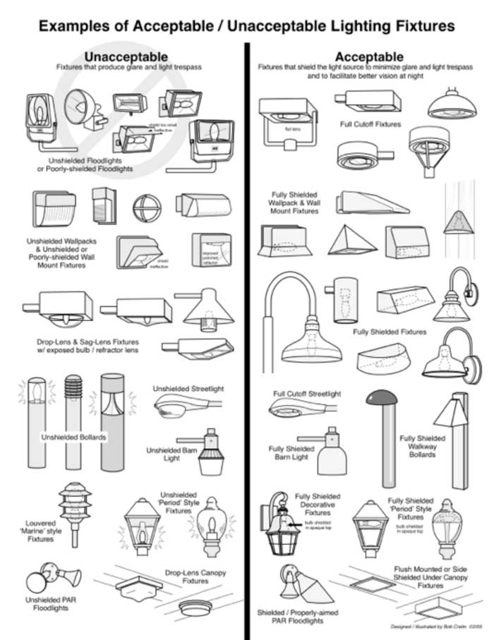

La pollution lumineuse est un excès de lumière ambiante due à des éclairages extérieurs mal conçus, trop nombreux, trop puissants ou de mauvaise qualité, et qui est diffusée à l’extérieur de la surface qui devrait normalement être éclairée, particulièrement si cette lumière est dirigée vers le haut.
Elle ne cesse d’augmenter, en ville et à la campagne. C’est un phénomène mondial, et même les grands observatoires du Chili sont maintenant impactés.
En France il est de plus en plus difficile d’observer la Voie Lactée, et le nombre d’étoiles visibles (plusieurs milliers normalement) est passé à quelques dizaines, voire moins en ville.


Trop souvent, le passage aux LEDs s’accompagne d’une augmentation de la puissance lumineuse
La lumière des LEDs se diffuse plus que celle des lampes a sodium jaunes.
Si on remplace une ancienne lampe par une LED, il faut diminuer par 4 la puissance lumineuse et s’assurer qu’elle n’éclaire pas vers le haut

Sensibiliser les élus et administrations (conférences et soirées d’observation)
Faire respecter la législation sur les extinctions d’enseignes
Arrêter d’installer les luminaires les plus nocifs (ex. boule opaline) et remplacer progressivement les existants
Proscrire les projecteurs éclairant le ciel (façades de musées etc.)
Identifier les administrations responsables des différents réseaux d’éclairages
Comment améliorer l’éclairage
Choisir un éclairage qui dirige la lumière uniquement vers le bas, et qui n’éblouit pas: la lampe ne doit pas être visible à distance, mais doit être encastrée dans son réflecteur et capotée pour une meilleure efficacité
Adapter la puissance en fonction des besoins
Ne pas utiliser d’éclairage bleu (ou très blanc), qui diffuse plus et est plus nocif pour l’environnement
Éteindre en zone rurale ou diminuer l’intensité des éclairages en deuxième partie de nuit, arrêter les illuminations de monuments après 22h.
